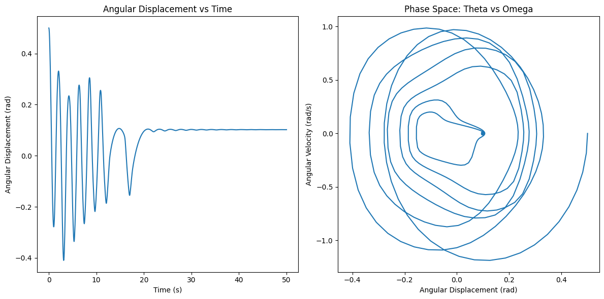

Problem 2
Problem 2: Investigating the Dynamics of a Forced Damped Pendulum
1. Theoretical Foundation
Governing Equation
The motion of a forced damped pendulum is described by the nonlinear differential equation:
where: - \( \theta \) is the angular displacement, - \( \gamma \) is the damping coefficient, - \( \omega_0^2 = g/L \) is the natural frequency squared (\( L \) is the pendulum length, \( g \) is gravity), - \( A \) is the amplitude of the external driving force, - \( \omega \) is the driving frequency.
Small-Angle Approximation
For small angles (\( \theta \approx \sin\theta \)), the equation simplifies to:
This is a driven damped harmonic oscillator, which exhibits: 1. Underdamped oscillations when \( \gamma \) is small. 2. Overdamped behavior when \( \gamma \) is large. 3. Resonance when \( \omega \approx \omega_0 \).
For large angles, the full nonlinear equation must be solved numerically.
2. Analysis of Dynamics
Key parameters affecting behavior: - Damping (\( \gamma \)): Higher damping leads to faster energy dissipation. - Driving force (\( A \)): Affects amplitude and introduces chaos. - Driving frequency (\( \omega \)): At resonance, the pendulum absorbs maximum energy.
Chaos and Periodicity
- For small \( A \) and moderate damping, the motion is periodic.
- Increasing \( A \) or changing \( \omega \) leads to quasiperiodic or chaotic motion.
- The transition from regular to chaotic motion can be observed using phase portraits and Poincaré sections.
3. Practical Applications
- Energy Harvesting: Devices that convert oscillations into electricity.
- Suspension Bridges: Resonance effects can lead to structural collapse (e.g., Tacoma Narrows Bridge).
- Human Gait Analysis: Biomechanical models use forced oscillators to study locomotion.
4. Implementation (Python Simulation)
We solve the nonlinear differential equation numerically using the Runge-Kutta method.


Further Visualization
- Phase portraits: \( \theta \) vs. \( \dot{\theta} \) (angular velocity).
- Poincaré sections: Sampled points to reveal chaotic behavior.
- Bifurcation diagrams: Show transition to chaos.
5. Discussion and Extensions
Limitations
- Small-angle approximation is only valid for small oscillations.
- Neglects air resistance and rope flexibility.
Extensions
- Nonlinear damping (e.g., quadratic drag).
- Non-periodic driving forces (e.g., stochastic forces).
- Coupled pendulums for more complex behavior.
Conclusion
This study explores how a forced damped pendulum transitions from periodic motion to chaos. The Python model provides numerical solutions, allowing us to analyze resonance, phase transitions, and chaotic dynamics.